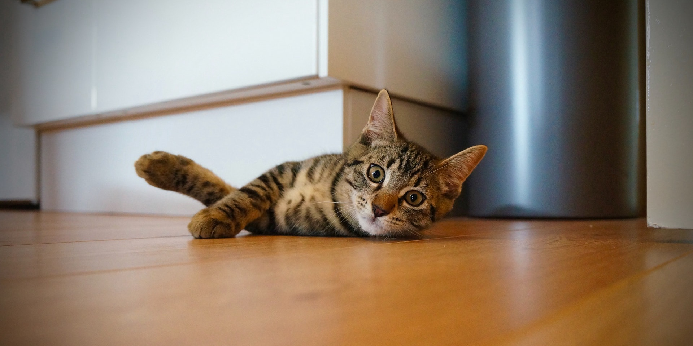

<p>&lt;!DOCTYPE html&gt;</p>
<html class="gr__localhost gr__" lang=""><head><br><meta http-equiv="content-type" content="text/html; charset=UTF-8"><meta name="generator" content="Hexo 3.8.0"><br><br><meta charset="UTF-8"><br><meta http-equiv="X-UA-Compatible" content="IE=edge"><br><meta name="viewport" content="width=device-width,user-scalable=no,initial-scale=1,minimum-scale=1,maximum-scale=1"><br><br><br><meta http-equiv="Cache-Control" content="no-transform"><br><meta http-equiv="Cache-Control" content="no-siteapp"><br><br><br><br>  <meta name="description" content="Dangel's blog"><br><br><br><br><br><br><br><br><br>  <link rel="alternate" href="http://localhost:4000/default" title="onism"><br><br><br><br><br>  <link rel="shortcut icon" type="image/x-icon" href="http://localhost:4000/favicon.ico?v=1.1"><br><br><br><br><link rel="canonical" href="https://www.lioil.live/404/"><br><br><br><meta name="description" content="🤔  你怎么跑这来了  虽然说，人生就像不停靠的列车，没有返程，只能欣赏沿途的美丽。   但是在这还是可以回头的，不如我们回 主页 ？"><br><meta property="og:type" content="website"><br><meta property="og:title" content="onism"><br><meta property="og:url" content="https://www.lioil.live/404/index.html"><br><meta property="og:site_name" content="onism"><br><meta property="og:description" content="🤔  你怎么跑这来了  虽然说，人生就像不停靠的列车，没有返程，只能欣赏沿途的美丽。   但是在这还是可以回头的，不如我们回 主页 ？"><br><meta property="og:locale" content="zh-CN"><br><meta property="og:image" content="https://ws1.sinaimg.cn/large/ad7520e8gy1fzhyzq9eofj21hc0qo7e5.jpg"><br><meta property="og:updated_time" content="2019-01-24T14:31:07.779Z"><br><meta name="twitter:card" content="summary"><br><meta name="twitter:title" content="onism"><br><meta name="twitter:description" content="🤔  你怎么跑这来了  虽然说，人生就像不停靠的列车，没有返程，只能欣赏沿途的美丽。   但是在这还是可以回头的，不如我们回 主页 ？"><br><meta name="twitter:image" content="https://ws1.sinaimg.cn/large/ad7520e8gy1fzhyzq9eofj21hc0qo7e5.jpg"><br><br><br><link rel="stylesheet" type="text/css" href="404_files/style.css"><br><link href="404_files/css.css" rel="stylesheet"><br><br><br><br><br><br><script async="" src="//www.google-analytics.com/analytics.js"></script><script async="" src="//www.google-analytics.com/analytics.js"></script><script async="" src="404_files/analytics.js"></script><script type="text/javascript"><br>  var themeConfig = {<br>    fancybox: {<br>      enable: false<br>    },<br>  };<br></script><br><br><br><br><br><br><br>  <script type="text/javascript"><br>    (function(i,s,o,g,r,a,m){i[‘GoogleAnalyticsObject’]=r;i[r]=i[r]||function(){<br>        (i[r].q=i[r].q||[]).push(arguments)},i[r].l=1<em>new Date();a=s.createElement(o),<br>        m=s.getElementsByTagName(o)[0];a.async=1;a.src=g;m.parentNode.insertBefore(a,m)<br>        })(window,document,’script’,’//<a href="http://www.google-analytics.com/analytics.js&#39;,&#39;ga&#39;)">www.google-analytics.com/analytics.js&#39;,&#39;ga&#39;)</a>;<br><br>        ga(‘create’, ‘UA-132977600-1’, ‘auto’);<br>        ga(‘send’, ‘pageview’);<br>  </script><br><br><br><br>    <title>  - onism </title><br>  <style type="text/css">#htmlToothbrush, #bodyToothbrush {overflow:hidden !important;zoom:100% !important}<br>#htmlToothbrush #bodyToothbrush .parentToothbrush {overflow:visible !important;z-index:auto !important;transform:none !important;-webkit-transform-style:flat !important;transition:none !important;contain:none !important;}<br>#htmlToothbrush #bodyToothbrush .absoluteToothbrush {position:absolute !important;}<br>#htmlToothbrush #bodyToothbrush .playerToothbrush {position:fixed !important;top:0px !important;left:1px !important;width:calc(100vw - 2px) !important;height:100vh !important;max-width:none !important;max-height:none !important;min-width:0 !important;min-height:0 !important;margin:0 !important;padding:0 !important;z-index:2147483647 !important;border:none !important;background-color:#000 !important;transform:none !important;}<br>#htmlToothbrush #bodyToothbrush .playerToothbrush video {object-fit:contain !important;}<br>#playerControlBtn {visibility:hidden;opacity:0;display:none;transition: all 0.5s ease;cursor: pointer;font: 12px “微软雅黑”;margin:0;width:64px;height:20px;line-height:20px;border:none;text-align: center;position: fixed;z-index:2147483647;background-color: #27A9D8;color: #FFF;} #playerControlBtn:hover {visibility:visible;opacity:1;background-color:#2774D8;}<br>#playerControlBtn.playerControlBtnCol {width:20px;height:64px;line-height:16px;}<br>#leftFullStackButton{display:none;position:fixed;width:1px;height:100vh;top:0;left:0;z-index:2147483647;background:#000;}<br>#rightFullStackButton{display:none;position:fixed;width:1px;height:100vh;top:0;right:0;z-index:2147483647;background:#000;}</style><style type="text/css">#htmlToothbrush #bodyToothbrush .node-video.node-full video,#htmlToothbrush #bodyToothbrush .WB_h5video video {width: inherit !important;height: inherit !important;}<br>#htmlToothbrush #bodyToothbrush #douyu_room_normal_flash_proxy_box {position:fixed !important;top:0px !important;left:1px !important;width:calc(100vw - 2px) !important;height:100vh !important;max-width:none !important;max-height:none !important;min-width:0 !important;min-height:0 !important;margin:0 !important;padding:0 !important;z-index:2147483645 !important;border:none !important;background-color:#000 !important;transform:none !important;}</style><script type="text/javascript" charset="utf-8" src="404_files/gwdang-notifier-ff.js"></script></head><br><br>  <body data-gr-c-s-loaded="true"><br>    <div id="page"><br>      <header id="masthead"><div class="site-header-inner"><br>    <h1 class="site-title"><br>        <a href="http://localhost:4000/" class="logo">onism</a><br>    </h1><br><br>    <nav id="nav-top"><br><br>            <ul id="menu-top" class="nav-top-items"><br><br>                    <li class="menu-item"><br>                        <a href="http://localhost:4000/"><br><br><br>                                Home<br><br>                        </a><br>                    </li><br><br>                    <li class="menu-item"><br>                        <a href="http://localhost:4000/archives"><br><br><br>                                Archives<br><br>                        </a><br>                    </li><br><br>                    <li class="menu-item"><br>                        <a href="http://localhost:4000/about"><br><br><br>                                About<br><br>                        </a><br>                    </li><br><br>            </ul><br><br>  </nav><br></div><br><br>      </header><br>      <div id="content"><br><br>    <div id="primary"><br>        <article class="post"><br>            <header class="post-header"><br>                <h1 class="post-title"><br><br>                </h1><br>            </header><br>            <div class="post-content"><br>                <p></p><br><h1 style="text-align:center">🤔</h1><br><br><h1 style="color:#2c2c2c;text-align:center"><center>你怎么跑这来了</center></h1><br><br><br><br><p style="color:#2c2c2c;text-align:center">虽然说，人生就像不停靠的列车，没有返程，只能欣赏沿途的美丽。 </p><br><br><p style="color:#2c2c2c;text-align:center">但是在这还是可以回头的，不如我们回 <a href="https://www.lioil.live/">主页</a> ？ </p><br><br><br>            </div><br>        </article><br>    </div><br><br>      </div><br><br>      <footer id="colophon"><span class="copyright-year"><br><br>        ©<br><br>    2019<br>    <span class="footer-author">Dangel.</span><br>    <span class="power-by"><br>        Powered by <a class="hexo-link" href="https://hexo.io/">Hexo</a> and <a class="theme-link" href="https://github.com/frostfan/hexo-theme-polarbear">Polar Bear</a><br>    </span><br></span><br><br>      </footer><br><br>      <div class="back-to-top" id="back-to-top" style="display: none;"><br>        <i class="iconfont icon-up"></i><br>      </div><br>    </div><br><br><br><script type="text/javascript"><br>  var disqus_shortname = ‘my-blog-7ojtcbibmr’;<br>  var disqus_identifier = ‘404/index.html’;<br><br>  var disqus_title = “”;<br><br><br>  var disqus = {<br>    load : function disqus(){<br>        if(typeof DISQUS !== ‘object’) {<br>          (function () {<br>          var s = document.createElement(‘script’); s.async = true;<br>          s.type = ‘text/javascript’;<br>          s.src = ‘//‘ + disqus_shortname + ‘.disqus.com/embed.js’;<br>          (document.getElementsByTagName(‘HEAD’)[0] || document.getElementsByTagName(‘BODY’)[0]).appendChild(s);<br>          }());<br>          $(‘#load-disqus’).remove(); ///加载后移除按钮<br>        }<br>    }<br>  }<br><br><br>    var disqus_config = function () {<br>        this.page.url = disqus_url;<br>        this.page.identifier = disqus_identifier;<br>        this.page.title = disqus_title;<br>    };<br><br><br></script><br><br><br><br><br><br><br><br><br>    <script type="text/javascript" src="404_files/jquery-3.js"></script><br><br><br><br><br>    <script type="text/javascript" src="404_files/theme.js"></script><br><script type="text/javascript" src="404_files/bootstrap.js"></script><br><br><br><br><tbdiv id="playerControlBtn"></tbdiv><tbdiv id="leftFullStackButton"></tbdiv><tbdiv id="rightFullStackButton"></tbdiv><div id="simple-translate-button" style="display: none;"></div><div id="simple-translate-panel" style="display: none;"><p>…</p></div><style id="stylus-1" type="text/css" class="stylus">@namespace url(<a href="http://www.w3.org/1999/xhtml)">http://www.w3.org/1999/xhtml)</a>;<br><br>/</em>!<br><br> <em> font-adobe-family-2.0.1.scss

 </em> <a href="https://n2o.io/go?page=custom.css">https://n2o.io/go?page=custom.css</a><br><br> <em>

 </em> Copyright 2018 Francis Zhao <a href="mailto:&#x66;&#x72;&#97;&#x6e;&#x63;&#105;&#x73;&#x40;&#x6e;&#x32;&#x6f;&#x2e;&#105;&#x6f;">&#x66;&#x72;&#97;&#x6e;&#x63;&#105;&#x73;&#x40;&#x6e;&#x32;&#x6f;&#x2e;&#105;&#x6f;</a><br><br> <em> <a href="https://n2o.io/license">https://n2o.io/license</a>

 </em><br><br> <em> Date: 2018-08-26T20:00+06:00

 </em>/<br><br>/<em> i really want this to be global </em>/<br><br>html{-webkit-font-smoothing:antialiased;-moz-osx-font-smoothing:grayscale;text-rendering:optimizeLegibility;font-family:”Source Han Sans SC”,”Source Han Sans”,”HanHei SC”,-apple-system,BlinkMacSystemFont,system-ui,sans-serif;quotes:”“” “””}html:lang(de){quotes:”„” ““”}html:lang(es),html:lang(no){quotes:”«” “»”}html:lang(fr){quotes:”« “ “ »”}html:lang(zh-CN),html:lang(zh-SG){font-family:”Source Han Sans SC”,”Source Han Sans”,”HanHei SC”,-apple-system,BlinkMacSystemFont,system-ui,sans-serif}html:lang(zh-TW),html:lang(zh-HK),html:lang(zh-MO){font-family:”Source Han Sans TC”,”Source Han Sans”,”HanHei TC”,-apple-system,BlinkMacSystemFont,system-ui,sans-serif;quotes:”「” “」”}html:lang(ja){font-family:”Source Han Sans”,”Hiragino Kaku Gothic Pro”,-apple-system,BlinkMacSystemFont,system-ui,sans-serif;quotes:”「” “」”}html:lang(ko){font-family:”Source Han Sans K”,”Source Han Sans”,”Apple Gothic”,-apple-system,BlinkMacSystemFont,system-ui,sans-serif}body,input,textarea,keygen,select,button{font-family:inherit}body:disabled,input:disabled,textarea:disabled,keygen:disabled,select:disabled,button:disabled{cursor:not-allowed}@font-face{font-family:”Arial”;src:local(“Source Han Sans SC”)}@font-face{font-family:”Georgia”;src:local(“Source Han Sans SC”)}@font-face{font-family:”Helvetica”;src:local(“Source Han Sans SC”)}@font-face{font-family:”Helvetica Neue”;src:local(“Source Han Sans SC”)}@font-face{font-family:”Segoe UI”;src:local(“Source Han Sans SC”)}@font-face{font-family:”Tahoma”;src:local(“Source Han Sans SC”)}@font-face{font-family:”Times”;src:local(“Source Han Sans SC”)}@font-face{font-family:”Time New Roman”;src:local(“Source Han Sans SC”)}@font-face{font-family:”Trebuchet”;src:local(“Source Han Sans SC”)}@font-face{font-family:”Trebuchet MS”;src:local(“Source Han Sans SC”)}@font-face{font-family:”Verdana”;src:local(“Source Han Sans SC”)}@font-face{font-family:”Consolas”;src:local(“Source Code Pro”)}@font-face{font-family:”Courier”;src:local(“Source Code Pro”)}@font-face{font-family:”Courier New”;src:local(“Source Code Pro”)}@font-face{font-family:”SimSun”;src:local(“Source Han Sans SC”)}@font-face{font-family:”SimSun-ExtB”;src:local(“Source Han Sans SC”)}@font-face{font-family:”宋体”;src:local(“Source Han Sans SC”)}@font-face{font-family:”NSimSun”;src:local(“Source Han Sans SC”)}@font-face{font-family:”新宋体”;src:local(“Source Han Sans SC”)}@font-face{font-family:”SimHei”;src:local(“Source Han Sans SC”)}@font-face{font-family:”黑体”;src:local(“Source Han Sans SC”)}@font-face{font-family:”Microsoft YaHei”;src:local(“Source Han Sans SC”)}@font-face{font-family:”微软雅黑”;src:local(“Source Han Sans SC”)}@font-face{font-family:”STHeiti SC”;src:local(“Source Han Sans SC”)}@font-face{font-family:”PingFang SC”;src:local(“Source Han Sans SC”)}@font-face{font-family:”苹方-简”;src:local(“Source Han Sans SC”)}@font-face{font-family:”MingLiU”;src:local(“Source Han Sans TC”)}@font-face{font-family:”MingLiU-ExtB”;src:local(“Source Han Sans TC”)}@font-face{font-family:”MingLiU_HKSCS”;src:local(“Source Han Sans TC”)}@font-face{font-family:”MingLiU_HKSCS-ExtB”;src:local(“Source Han Sans TC”)}@font-face{font-family:”PMingLiU”;src:local(“Source Han Sans TC”)}@font-face{font-family:”PMingLiU-ExtB”;src:local(“Source Han Sans TC”)}@font-face{font-family:”Microsoft JhengHei”;src:local(“Source Han Sans TC”)}@font-face{font-family:”微軟正黑體”;src:local(“Source Han Sans TC”)}@font-face{font-family:”STHeiti TC”;src:local(“Source Han Sans TC”)}@font-face{font-family:”PingFang TC”;src:local(“Source Han Sans TC”)}@font-face{font-family:”蘋方-繁”;src:local(“Source Han Sans TC”)}@font-face{font-family:”PingFang HK”;src:local(“Source Han Sans TC”)}@font-face{font-family:”蘋方-港”;src:local(“Source Han Sans TC”)}@font-face{font-family:”MS Gothic”;src:local(“Source Han Sans”)}@font-face{font-family:”MS PGothic”;src:local(“Source Han Sans”)}@font-face{font-family:”MS UI Gothic”;src:local(“Source Han Sans”)}@font-face{font-family:”Yu Gothic”;src:local(“Source Han Sans”)}@font-face{font-family:”Yu Gothic UI”;src:local(“Source Han Sans”)}@font-face{font-family:”Malgun Gothic”;src:local(“Source Han Sans K”)}.adsbygoogle{display:none !important}</style><style id="stylus-9" type="text/css" class="stylus">@namespace url(<a href="http://www.w3.org/1999/xhtml)">http://www.w3.org/1999/xhtml)</a>;<br>body, input, .navigator-toolbox, .toolbarbutton-text, .sidebar-title{<br><br>text-shadow: 0px 0px 1px #ACACAC;<br><br>}</style><tbdiv id="playerControlBtn"></tbdiv><tbdiv id="leftFullStackButton"></tbdiv><tbdiv id="rightFullStackButton"></tbdiv><div id="simple-translate-button"></div><div id="simple-translate-panel"><p>…</p></div><style id="stylus-1" type="text/css" class="stylus">@namespace url(<a href="http://www.w3.org/1999/xhtml)">http://www.w3.org/1999/xhtml)</a>;<br><br>/<em>!

 </em> font-adobe-family-2.0.1.scss<br><br> <em> <a href="https://n2o.io/go?page=custom.css">https://n2o.io/go?page=custom.css</a>

 </em><br><br> <em> Copyright 2018 Francis Zhao <a href="mailto:&#102;&#x72;&#x61;&#x6e;&#x63;&#105;&#x73;&#64;&#x6e;&#x32;&#x6f;&#x2e;&#105;&#x6f;">&#102;&#x72;&#x61;&#x6e;&#x63;&#105;&#x73;&#64;&#x6e;&#x32;&#x6f;&#x2e;&#105;&#x6f;</a>

 </em> <a href="https://n2o.io/license">https://n2o.io/license</a><br><br> <em>

 </em> Date: 2018-08-26T20:00+06:00<br><br> <em>/<br><br>/</em> i really want this to be global <em>/<br><br>html{-webkit-font-smoothing:antialiased;-moz-osx-font-smoothing:grayscale;text-rendering:optimizeLegibility;font-family:”Source Han Sans SC”,”Source Han Sans”,”HanHei SC”,-apple-system,BlinkMacSystemFont,system-ui,sans-serif;quotes:”“” “””}html:lang(de){quotes:”„” ““”}html:lang(es),html:lang(no){quotes:”«” “»”}html:lang(fr){quotes:”« “ “ »”}html:lang(zh-CN),html:lang(zh-SG){font-family:”Source Han Sans SC”,”Source Han Sans”,”HanHei SC”,-apple-system,BlinkMacSystemFont,system-ui,sans-serif}html:lang(zh-TW),html:lang(zh-HK),html:lang(zh-MO){font-family:”Source Han Sans TC”,”Source Han Sans”,”HanHei TC”,-apple-system,BlinkMacSystemFont,system-ui,sans-serif;quotes:”「” “」”}html:lang(ja){font-family:”Source Han Sans”,”Hiragino Kaku Gothic Pro”,-apple-system,BlinkMacSystemFont,system-ui,sans-serif;quotes:”「” “」”}html:lang(ko){font-family:”Source Han Sans K”,”Source Han Sans”,”Apple Gothic”,-apple-system,BlinkMacSystemFont,system-ui,sans-serif}body,input,textarea,keygen,select,button{font-family:inherit}body:disabled,input:disabled,textarea:disabled,keygen:disabled,select:disabled,button:disabled{cursor:not-allowed}@font-face{font-family:”Arial”;src:local(“Source Han Sans SC”)}@font-face{font-family:”Georgia”;src:local(“Source Han Sans SC”)}@font-face{font-family:”Helvetica”;src:local(“Source Han Sans SC”)}@font-face{font-family:”Helvetica Neue”;src:local(“Source Han Sans SC”)}@font-face{font-family:”Segoe UI”;src:local(“Source Han Sans SC”)}@font-face{font-family:”Tahoma”;src:local(“Source Han Sans SC”)}@font-face{font-family:”Times”;src:local(“Source Han Sans SC”)}@font-face{font-family:”Time New Roman”;src:local(“Source Han Sans SC”)}@font-face{font-family:”Trebuchet”;src:local(“Source Han Sans SC”)}@font-face{font-family:”Trebuchet MS”;src:local(“Source Han Sans SC”)}@font-face{font-family:”Verdana”;src:local(“Source Han Sans SC”)}@font-face{font-family:”Consolas”;src:local(“Source Code Pro”)}@font-face{font-family:”Courier”;src:local(“Source Code Pro”)}@font-face{font-family:”Courier New”;src:local(“Source Code Pro”)}@font-face{font-family:”SimSun”;src:local(“Source Han Sans SC”)}@font-face{font-family:”SimSun-ExtB”;src:local(“Source Han Sans SC”)}@font-face{font-family:”宋体”;src:local(“Source Han Sans SC”)}@font-face{font-family:”NSimSun”;src:local(“Source Han Sans SC”)}@font-face{font-family:”新宋体”;src:local(“Source Han Sans SC”)}@font-face{font-family:”SimHei”;src:local(“Source Han Sans SC”)}@font-face{font-family:”黑体”;src:local(“Source Han Sans SC”)}@font-face{font-family:”Microsoft YaHei”;src:local(“Source Han Sans SC”)}@font-face{font-family:”微软雅黑”;src:local(“Source Han Sans SC”)}@font-face{font-family:”STHeiti SC”;src:local(“Source Han Sans SC”)}@font-face{font-family:”PingFang SC”;src:local(“Source Han Sans SC”)}@font-face{font-family:”苹方-简”;src:local(“Source Han Sans SC”)}@font-face{font-family:”MingLiU”;src:local(“Source Han Sans TC”)}@font-face{font-family:”MingLiU-ExtB”;src:local(“Source Han Sans TC”)}@font-face{font-family:”MingLiU_HKSCS”;src:local(“Source Han Sans TC”)}@font-face{font-family:”MingLiU_HKSCS-ExtB”;src:local(“Source Han Sans TC”)}@font-face{font-family:”PMingLiU”;src:local(“Source Han Sans TC”)}@font-face{font-family:”PMingLiU-ExtB”;src:local(“Source Han Sans TC”)}@font-face{font-family:”Microsoft JhengHei”;src:local(“Source Han Sans TC”)}@font-face{font-family:”微軟正黑體”;src:local(“Source Han Sans TC”)}@font-face{font-family:”STHeiti TC”;src:local(“Source Han Sans TC”)}@font-face{font-family:”PingFang TC”;src:local(“Source Han Sans TC”)}@font-face{font-family:”蘋方-繁”;src:local(“Source Han Sans TC”)}@font-face{font-family:”PingFang HK”;src:local(“Source Han Sans TC”)}@font-face{font-family:”蘋方-港”;src:local(“Source Han Sans TC”)}@font-face{font-family:”MS Gothic”;src:local(“Source Han Sans”)}@font-face{font-family:”MS PGothic”;src:local(“Source Han Sans”)}@font-face{font-family:”MS UI Gothic”;src:local(“Source Han Sans”)}@font-face{font-family:”Yu Gothic”;src:local(“Source Han Sans”)}@font-face{font-family:”Yu Gothic UI”;src:local(“Source Han Sans”)}@font-face{font-family:”Malgun Gothic”;src:local(“Source Han Sans K”)}.adsbygoogle{display:none !important}</style><tbdiv id="playerControlBtn"></tbdiv><tbdiv id="leftFullStackButton"></tbdiv><tbdiv id="rightFullStackButton"></tbdiv></body><div id="simple-translate-button"></div><div id="simple-translate-panel"><p>…</p></div><style id="stylus-1" type="text/css" class="stylus">@namespace url(<a href="http://www.w3.org/1999/xhtml)">http://www.w3.org/1999/xhtml)</a>;<br>/</em>!<br> <em> font-adobe-family-2.0.1.scss
 </em> <a href="https://n2o.io/go?page=custom.css">https://n2o.io/go?page=custom.css</a><br> <em>
 </em> Copyright 2018 Francis Zhao <a href="mailto:&#102;&#x72;&#97;&#110;&#99;&#105;&#115;&#64;&#110;&#50;&#x6f;&#x2e;&#x69;&#x6f;">&#102;&#x72;&#97;&#110;&#99;&#105;&#115;&#64;&#110;&#50;&#x6f;&#x2e;&#x69;&#x6f;</a><br> <em> <a href="https://n2o.io/license">https://n2o.io/license</a>
 </em><br> <em> Date: 2018-08-26T20:00+06:00
 </em>/<br>/<em> i really want this to be global </em>/<br>html{-webkit-font-smoothing:antialiased;-moz-osx-font-smoothing:grayscale;text-rendering:optimizeLegibility;font-family:”Source Han Sans SC”,”Source Han Sans”,”HanHei SC”,-apple-system,BlinkMacSystemFont,system-ui,sans-serif;quotes:”“” “””}html:lang(de){quotes:”„” ““”}html:lang(es),html:lang(no){quotes:”«” “»”}html:lang(fr){quotes:”« “ “ »”}html:lang(zh-CN),html:lang(zh-SG){font-family:”Source Han Sans SC”,”Source Han Sans”,”HanHei SC”,-apple-system,BlinkMacSystemFont,system-ui,sans-serif}html:lang(zh-TW),html:lang(zh-HK),html:lang(zh-MO){font-family:”Source Han Sans TC”,”Source Han Sans”,”HanHei TC”,-apple-system,BlinkMacSystemFont,system-ui,sans-serif;quotes:”「” “」”}html:lang(ja){font-family:”Source Han Sans”,”Hiragino Kaku Gothic Pro”,-apple-system,BlinkMacSystemFont,system-ui,sans-serif;quotes:”「” “」”}html:lang(ko){font-family:”Source Han Sans K”,”Source Han Sans”,”Apple Gothic”,-apple-system,BlinkMacSystemFont,system-ui,sans-serif}body,input,textarea,keygen,select,button{font-family:inherit}body:disabled,input:disabled,textarea:disabled,keygen:disabled,select:disabled,button:disabled{cursor:not-allowed}@font-face{font-family:”Arial”;src:local(“Source Han Sans SC”)}@font-face{font-family:”Georgia”;src:local(“Source Han Sans SC”)}@font-face{font-family:”Helvetica”;src:local(“Source Han Sans SC”)}@font-face{font-family:”Helvetica Neue”;src:local(“Source Han Sans SC”)}@font-face{font-family:”Segoe UI”;src:local(“Source Han Sans SC”)}@font-face{font-family:”Tahoma”;src:local(“Source Han Sans SC”)}@font-face{font-family:”Times”;src:local(“Source Han Sans SC”)}@font-face{font-family:”Time New Roman”;src:local(“Source Han Sans SC”)}@font-face{font-family:”Trebuchet”;src:local(“Source Han Sans SC”)}@font-face{font-family:”Trebuchet MS”;src:local(“Source Han Sans SC”)}@font-face{font-family:”Verdana”;src:local(“Source Han Sans SC”)}@font-face{font-family:”Consolas”;src:local(“Source Code Pro”)}@font-face{font-family:”Courier”;src:local(“Source Code Pro”)}@font-face{font-family:”Courier New”;src:local(“Source Code Pro”)}@font-face{font-family:”SimSun”;src:local(“Source Han Sans SC”)}@font-face{font-family:”SimSun-ExtB”;src:local(“Source Han Sans SC”)}@font-face{font-family:”宋体”;src:local(“Source Han Sans SC”)}@font-face{font-family:”NSimSun”;src:local(“Source Han Sans SC”)}@font-face{font-family:”新宋体”;src:local(“Source Han Sans SC”)}@font-face{font-family:”SimHei”;src:local(“Source Han Sans SC”)}@font-face{font-family:”黑体”;src:local(“Source Han Sans SC”)}@font-face{font-family:”Microsoft YaHei”;src:local(“Source Han Sans SC”)}@font-face{font-family:”微软雅黑”;src:local(“Source Han Sans SC”)}@font-face{font-family:”STHeiti SC”;src:local(“Source Han Sans SC”)}@font-face{font-family:”PingFang SC”;src:local(“Source Han Sans SC”)}@font-face{font-family:”苹方-简”;src:local(“Source Han Sans SC”)}@font-face{font-family:”MingLiU”;src:local(“Source Han Sans TC”)}@font-face{font-family:”MingLiU-ExtB”;src:local(“Source Han Sans TC”)}@font-face{font-family:”MingLiU_HKSCS”;src:local(“Source Han Sans TC”)}@font-face{font-family:”MingLiU_HKSCS-ExtB”;src:local(“Source Han Sans TC”)}@font-face{font-family:”PMingLiU”;src:local(“Source Han Sans TC”)}@font-face{font-family:”PMingLiU-ExtB”;src:local(“Source Han Sans TC”)}@font-face{font-family:”Microsoft JhengHei”;src:local(“Source Han Sans TC”)}@font-face{font-family:”微軟正黑體”;src:local(“Source Han Sans TC”)}@font-face{font-family:”STHeiti TC”;src:local(“Source Han Sans TC”)}@font-face{font-family:”PingFang TC”;src:local(“Source Han Sans TC”)}@font-face{font-family:”蘋方-繁”;src:local(“Source Han Sans TC”)}@font-face{font-family:”PingFang HK”;src:local(“Source Han Sans TC”)}@font-face{font-family:”蘋方-港”;src:local(“Source Han Sans TC”)}@font-face{font-family:”MS Gothic”;src:local(“Source Han Sans”)}@font-face{font-family:”MS PGothic”;src:local(“Source Han Sans”)}@font-face{font-family:”MS UI Gothic”;src:local(“Source Han Sans”)}@font-face{font-family:”Yu Gothic”;src:local(“Source Han Sans”)}@font-face{font-family:”Yu Gothic UI”;src:local(“Source Han Sans”)}@font-face{font-family:”Malgun Gothic”;src:local(“Source Han Sans K”)}.adsbygoogle{display:none !important}</style></html>